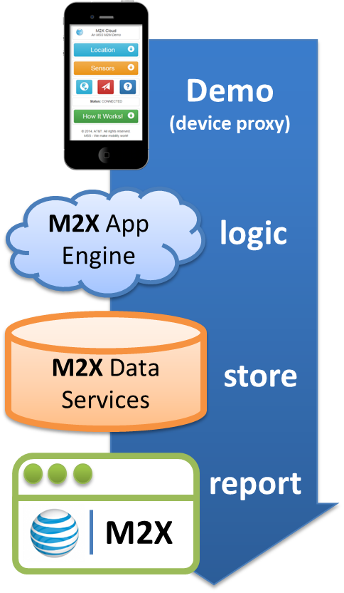

M2X Cloud
An MSS M2M Demo
Hardware & Features
Environment
Your phone is acting as the Internet "Thing," which can push device "sensor" information into the AT&T M2X cloud.
View your device information: M2X Feeds
Here is an illustration of our demo environment (phone->M2X App Engine->M2X Data Services).
This demo is a web app is written using HTML5, CSS3, and JavaScript. When you refresh the location information, the device GPS is used to obtain updated coordinates. Alternately, you can enter a zip code and the app will query Google Maps for the lat/long matching that postal code.
As the location is selected / modified, the app also queries the Yahoo Weather via APIs to get the latest weather information for the location. That gives us "device-centric" data to send into the AT&T M2X cloud. You can find that under the "Device" pull-down.
- When you press the "Send to M2X" button, the app formats the location, device and weather information into a JSON object and sends via web service to the AT&T M2X App Engine.
- Upon authentication by M2X, it is parsed & validated, applied via business logic, and ultimately pushed into the M2X Data Services cloud for long-term storage.
- Once stored, you can view your data in time-based format, aggregate for business analytics, share with other applications, etc.
© 2014 by Kevin W. Jones. Kevin is an architect with AT&T Mobility Solutions Services. If you'd like to learn more, ask your AT&T mobility professional to contact Kevin and the MSS team.
- For best results, combine this demo with the M2X Talks! demo, found here.